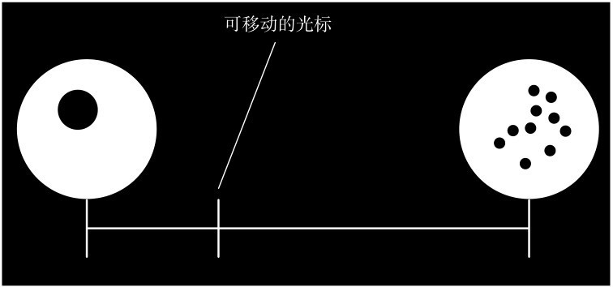
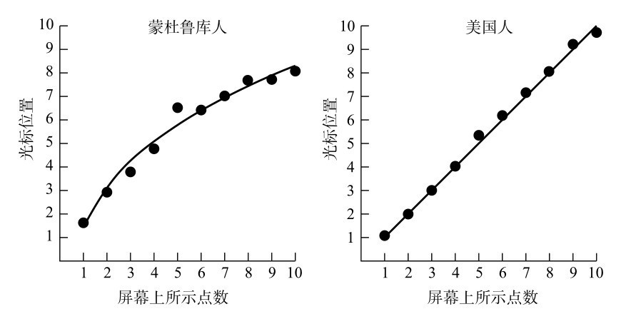
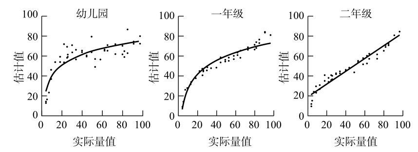
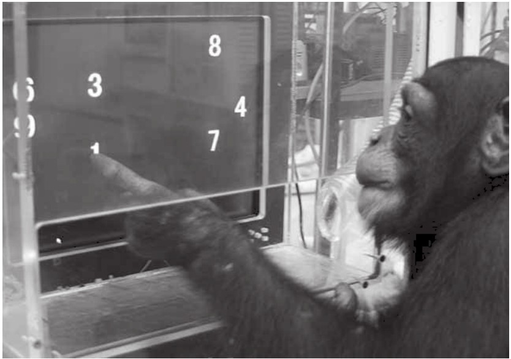
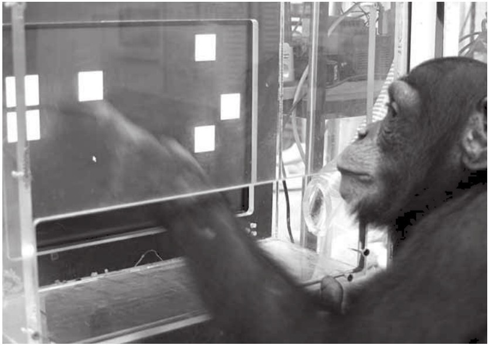
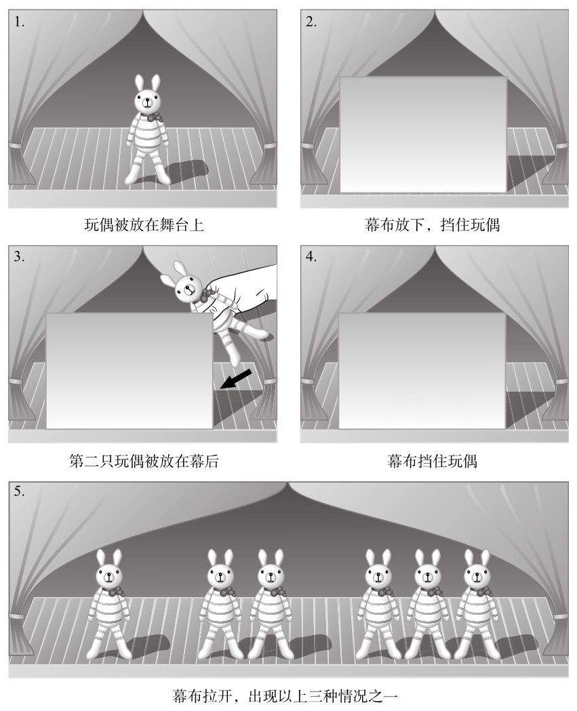
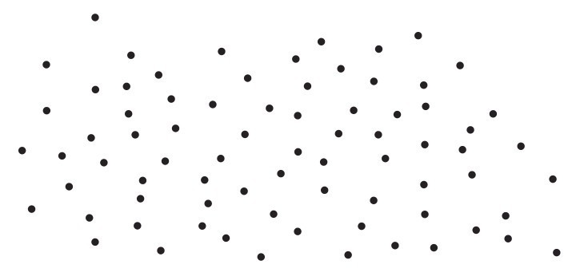
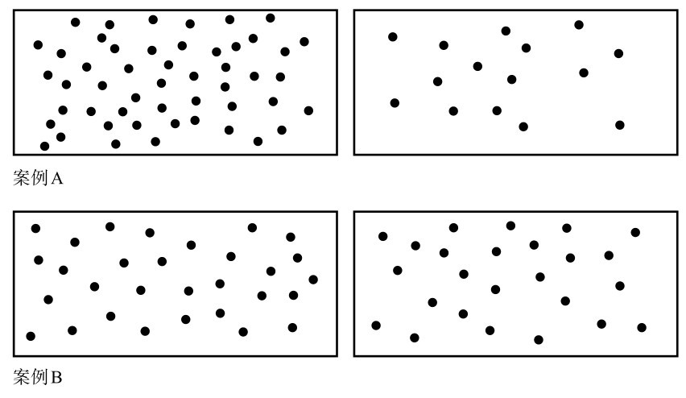
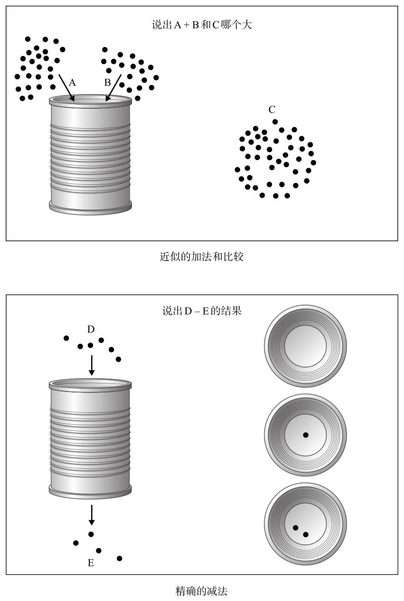
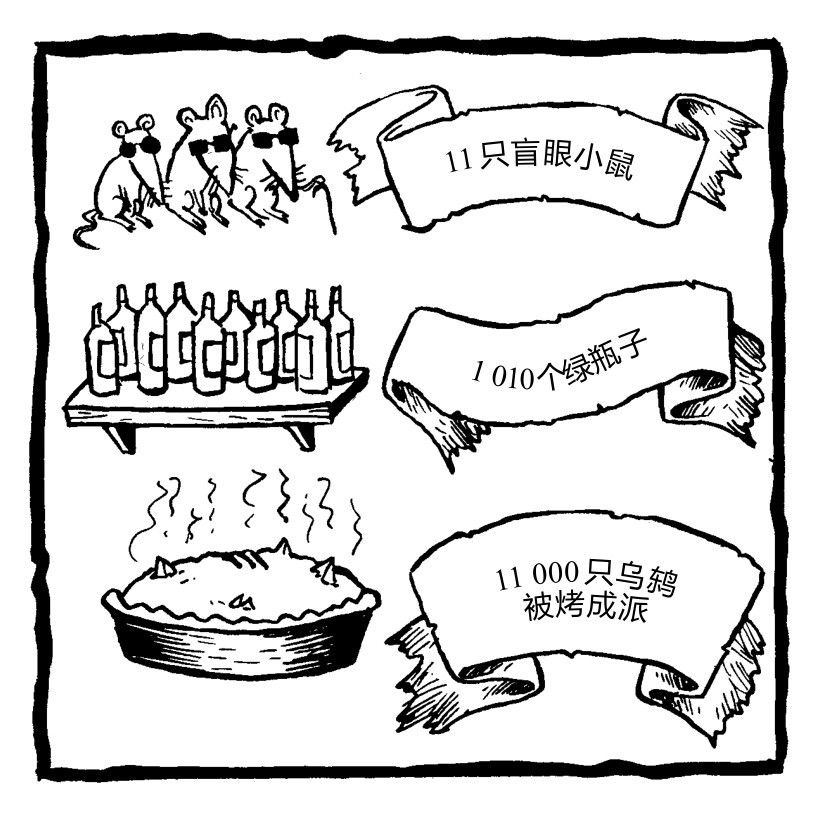

在这一章中，作者试图找出数字的来源，因为数字出现的时间并不长。他遇到了一群住在丛林里的人，和一只一直住在城市里的黑猩猩。
我走进皮埃尔·皮卡（Pierre Pica）在巴黎狭小的公寓，一股驱蚊剂的臭味扑面而来。皮卡刚从亚马孙雨林回来，他在那里的一个印第安人部落中待了5个月，此时他正在给带回来的礼物消毒。书房的墙壁上装饰着部落面具、羽毛头饰和编织的篮子，书架上堆满了学术书籍。窗台上是一个没有被还原的魔方。
我问皮卡他这趟旅途怎么样。
“很难。”他回答。
皮卡是一位语言学家，也许正因如此，他说话总是缓慢而谨慎，对每个单词都格外注意。他50多岁 [1] 了，但看起来有些孩子气。他有一双明亮的蓝眼睛，面色红润，一头银发柔软而蓬乱。他的声音很平静，动作却很紧张的样子。
皮卡是美国著名语言学家诺姆·乔姆斯基的学生，现在在法国国家科学研究中心工作。在过去的10年里，他一直在研究蒙杜鲁库人（Munduruku），这是巴西亚马孙地区一个包含约7000位原住民的群体。蒙杜鲁库人是狩猎采集者，他们居住在雨林地区的小村庄中，分布的地盘面积大约是威尔士的两倍。皮卡的研究主要关注蒙杜鲁库人的语言：他们的语言没有时态，没有复数，也不存在大于5的数词。
为了进行田野调查，皮卡踏上了一段堪称伟大冒险家的旅程。离这群印第安人最近的大型机场位于圣塔伦，那是一个距大西洋500英里的小镇，位于亚马孙雨林中。从那里出发，他坐了15个小时的渡轮，沿着塔帕若斯河行驶近200英里，到达伊泰图巴，这是一个曾经历过淘金热的小镇，也是皮卡这一路能囤积食物和燃料的最后一站。在近期的一次旅行中，皮卡在伊泰图巴租了一辆吉普车，带上他的设备，包括电脑、太阳能电池板、电池、书和120加仑（约545升）汽油。然后，他沿着横贯亚马孙的高速公路行驶，这段公路是20世纪70年代在民族主义驱动下建成的，它现在已经变为一条破破烂烂的泥泞小路，常常无法通行。
皮卡的目的地是雅卡雷阿坎加，也就是位于伊泰图巴西南200英里的一个小型居住地。我问他开车到那里要花多长时间。“看情况。”他耸耸肩，“可能要一辈子，也可能两天就到。”
我重复了一遍问题，我想问的是这次他花了多长时间。
“你知道，你永远不知道要花多长时间，因为永远不会花相同的时间。雨季需要10到12个小时，这还是一切顺利的情况下。”
雅卡雷阿坎加位于蒙杜鲁库人领地的边缘。为了进入他们的领地，皮卡必须等人来和他们谈判，让他们用独木舟把自己带到那里。
“你等了多久？”我问。
“我等了很久。但我再说一次，别问我花了多长时间。”
“所以大概是一两天？”我试探性地问。
他皱起眉头想了几秒：“大约两周吧。”
离开巴黎一个多月后，皮卡终于快到达目的地了。我还想知道，从雅卡雷阿坎加到村庄要花多长时间。
但到这会儿，皮卡明显对我的问题有些不耐烦了：“我对所有事情的回答都一样——要看情况！ ”
我坚持问，那这次花了多长时间？
他结结巴巴地说：“我不知道。我想……也许……两天……一天一夜……”
我越是追问皮卡有关事实和数字的问题，他就越是不愿意回答。我有些恼火。我还不确定，他的反应背后是法国人的固执，还是学术上的迂腐，或者就是一种普遍的抵触情绪。我没有继续追问，而是转而讨论其他话题。几个小时后，当我们谈到在一个偏僻的地方待了这么久之后再回到家的感觉时，他才吐露实情。“从亚马孙平原回来后，我失去了时间感和数字感，或许也失去了空间感。”他说。他会忘记自己约了人见面，会被简单的指示弄得晕头转向。“我很难再适应巴黎，很难适应这里的角度和直线。”皮卡之所以无法给出数据，就是因为他受到的这种文化的冲击。他和那些几乎不会数数的人相处了那么久，以至于他失去了用数字来描述世界的能力。
没有人确切地知道数字是什么时候诞生的，但数字的出现可能不超过10000年。这里我指的是用单词和符号表示数字的有效系统。一种理论认为，这样的系统是与农业和贸易一同出现的，因为数字是一种必不可少的工具，它可以用来盘货，并保证你没有被人骗。蒙杜鲁库人一直以来都是自给自足的农民，直到最近，钱才开始在他们的村庄中流通，所以他们从来没有发展出计数的技能。有人认为巴布亚新几内亚的原住民部落中出现数字是由礼物交换的习俗引起的。相比之下，亚马孙没有这样的传统。
然而，在数万年前，早在数字未出现之时，我们的祖先肯定对数量有一定的敏感度。他们可以分辨出一只还是两只猛犸象，并且认识到一晚和两晚是不一样的。然而，从两个事物的具体概念，到发明一个符号或单词代表2，这种智力上的飞跃需要很多年才能实现。事实上，亚马孙的一些群体正在经历这种过程。有些部落的数词只包括1、2和很多。蒙杜鲁库人能一直数到5，他们这个群体的计数系统相对来说已经比较复杂了。
数字在我们的生活中太普遍了，因此我们很难想象没有数字的人是如何生存的。然而，皮埃尔·皮卡和蒙杜鲁库人待在一起一段时间后，他很容易就适应了没有数字的生活。他睡在吊床上，出门打猎，吃着貘、犰狳和野猪，通过太阳的位置判断时间。如果下雨，他就待在家里；如果是晴天，他就出去。生活根本不需要数数。
不过，我还是觉得奇怪，亚马孙人的日常生活中怎会完全没有出现大于5的数字？我问皮卡，印第安人会怎么表示“6条鱼”。比如，他正在为6个人准备一顿饭，想要保证每个人都分到一条鱼。
“这不可能。”他说，“‘我要6个人吃的鱼’这句话就不存在。”
如果你问一个有6个孩子的蒙杜鲁库人“你有几个孩子？”呢？
皮卡也给出了同样的回答：“他会说‘我不知道’。他没法表达。”
然而，皮卡补充道，这是一个文化问题。这个蒙杜鲁库人不会数了数他的第1个、第2个、第3个、第4个和第5个孩子，然后抓抓头，因为他数不下去了。对蒙杜鲁库人来说，数孩子这个想法就是荒谬的。事实上，对任何东西计数的想法都是荒唐的。
“为什么一个蒙杜鲁库的成年人会想数他的孩子呢？”皮卡问道。他说，孩子们由部落里的所有成年人照顾，没有人在意哪个孩子是谁家的。这就相当于法语中的“我来自一个大家庭”。“当我说我有一个大家庭时，我的意思是我不知道它有多少成员。从哪里开始是我的家庭，从哪里开始是别人的家庭？我都不知道，也从来没有人告诉我。”同样，如果你问一个蒙杜鲁库成年人他要照顾多少个孩子，也没有正确的答案。“他会回答‘我不知道’，事实就是这样。”
在历史的长河中，不只有蒙杜鲁库人不计算群体成员的人数。大卫王因为清点了自己的子民，被上帝以三天瘟疫作为惩罚，导致77000人死亡。犹太人只能用间接的方法数人，因此在犹太教堂里，为了确保有10人（举行正式礼拜的规定人数）在场，他们要用一句包含10个词的祷告，让每个人说出一个词。犹太教认为，用数字来计算人数被认为是一种挑人的方法，这使得他们很容易受到邪恶的影响。如果请一位正统犹太教的拉比数他的孩子，你很有可能得到和蒙杜鲁库人一样的回答。
我曾经和一位巴西老师交流过，这位老师在原住民社区工作了很久。她说，印第安人认为，外人不断询问他们有多少孩子是一种强迫，尽管来访者只是礼貌地询问一下。数孩子的目的是什么？她说，这让印第安人非常怀疑。
对蒙杜鲁库人最早的书面记录是在1768年，当时一位居民在河岸上发现了蒙杜鲁库人。一个世纪后，方济会的传教士在蒙杜鲁库人的土地上建起了一个基地。19世纪晚期，在橡胶工业繁荣的时期，割胶工人深入这一地区，使得蒙杜鲁库人与外界有了更多接触。大多数蒙杜鲁库人仍然生活在相对孤立的环境中，但和其他许多与外界接触已久的印第安人群体一样，他们喜欢穿短袖衫和短裤这类西方服装。现代生活的其他特征最终不可避免地渗入了他们的世界，比如电和电视，还有数字。事实上，一些生活在领地边缘的蒙杜鲁库人已经学会了葡萄牙语，这是巴西的国语，他们可以用葡萄牙语数数。“他们可以数1、2、3，一直到几百。”皮卡说，“然后你问他们，‘5减3是多少？’”皮卡模仿他们耸耸肩的样子，他们仍不知道。
在雨林中，皮卡使用依靠太阳能电池供电的笔记本电脑进行研究。由于高温和潮湿，硬件维护极为困难，而有时最困难的还是召集研究的参与者。有一次，一个村庄的首领要求皮卡吃下一只巨大的红色沙巴蚂蚁，才肯让他采访一个孩子。这位一贯勤奋的语言学家咬碎昆虫并把它吞了下去，但还是露出了痛苦的表情。
之所以要研究只能数到5的人的数学能力，是为了探索我们的数字直觉的本质。皮卡想知道哪些能力对所有人类而言是普遍的，哪些则是由文化塑造的。在他最有趣的一项实验中，他测试了印第安人对数字的空间理解。当数字分散在一条直线上时，他们会如何想象数字排布？在现代社会，我们总是会把数排列在线上：比如卷尺和尺子上、图标里，还有沿街的房子上。由于蒙杜鲁库人不认识数字，皮卡只能用屏幕上的点来测试。每位志愿者都会看到一段没有标记的线，如图0-1所示。线的左边有1个点，右边有10个点。然后，皮卡为每位志愿者随机展示一组点，数量在1到10之间。志愿者必须在线段里指出他认为这组点应该在什么位置。皮卡将光标移到这一点并单击。通过反复点击，他可以准确地看到蒙杜鲁库人是如何分配从1到10之间的数字的。

图0-1 对数字排布的测试
美国成年人接受这项测试时，会将数字在线段上等距离排列。它们重新构建出了我们在学校里学习过的数轴，在这样的数轴中，相邻数字之间的距离相同。然而，蒙杜鲁库人的结果却大不相同。他们认为数字之间的间隔一开始较大，随着数字的增加，间隔逐渐变小。例如，1个和2个点、2个和3个点的标记之间的距离，远大于7个和8个点、8个和9个点之间的距离，结果如图0-2所示。

图0-2 蒙杜鲁库人和美国人对数字间间隔的理解
这项结果令人惊讶。人们通常理所应当地认为“数字是均匀分布的”。我们在学校里就是这样学的，而我们也就这样接受了。它是所有测量和科学的基础。然而，蒙杜鲁库人眼中的世界并不是这样。除了计数的语言和数词不同外，他们想象数量级的方式也与我们完全不同。
标尺上的数字均匀分布，被称为线性刻度。如果数字越大，彼此间越靠近，这种刻度就被称为对数刻度。 [2] 结果发现，对数的思维方式并不仅仅存在于亚马孙的印第安人中。所有人生来都是这样思考数字的。2004年，宾夕法尼亚州卡内基-梅隆大学的罗伯特·西格勒（Robert Siegler）和朱莉·布思（Julie Booth）对一群幼儿园的学生（平均年龄为5.8岁）、一年级的学生（6.9岁）和二年级的学生（7.8岁）做了类似的数轴实验。结果显示，随着我们对计数越来越熟悉，我们的直觉也逐渐被固化。对于没有受过正规的数学教育的幼儿园学生，他们会按对数绘制出数字。小学一年级的学生们因为开始学习数字和符号，所以他们的曲线变直了一些。而小学二年级的学生绘制出的数字终于沿着直线均匀分布了。

图0-3 不同年龄学生对数字量值的感知
为什么印第安人和小孩子认为，更大的数字间的距离比更小的数字间的距离更近？有一种简单的解释。在实验中，研究者给志愿者展示了一组圆点，并询问这组圆点在一条直线上的位置，这条直线的左边有一个圆点，右边有10个圆点（在孩子们参与的实验中，右边有100个圆点）。假设一个蒙杜鲁库人看到了5个点，他会仔细研究，发现5个点是1个点的5倍，但10个点只是5个点的两倍。蒙杜鲁库人和孩子似乎是通过估计数量之间的比率来决定数字的位置的。在考虑比率时，5和1之间的距离远大于10和5之间的距离，这是合乎逻辑的。如果你用比率来判断数量，你就会得出对数刻度。
皮卡认为，通过估计比率近似地理解数量，是人类的普遍直觉。事实上，对于不认识数字的人类，比如印第安人和小孩子来说，这是他们看世界的唯一方式。相比之下，用精确的数字来理解数量并不是一种普遍的直觉，而是文化的产物。皮卡认为，近似值和比率之所以会先于确切数字产生，是因为对于野外生存来说，比率比计数能力重要得多。面对一群挥舞长矛的对手，我们需要立刻知道他们的人数是否比我们更多。看到两棵树，我们需要立刻知道哪棵树上的果实更多。在这两种情况下，都没有必要一一数出每一个敌人或者每一颗果实。最关键的是快速估计出相关数量，并进行比较。换言之，就是做出估计，并判断其比率。
对数刻度也反映了我们感知距离的方式，这可能就是它符合直觉的原因。它考虑到了视角。例如，如果我们看到一棵100米外的树，后面100米还有一棵，那么第二棵树与第一棵树之间的距离看起来比第一棵树到我的距离更短。对蒙杜鲁库人来说，说这两个100米代表的距离相同，就违背了他们对环境的感知。
精确的数字能为我们提供一个线性框架，这个框架与我们的对数性直觉相反。事实上，我们对精确数字的熟悉程度意味着，我们的对数性直觉在大多数情况下会被推翻。但它并没有完全消失。我们对数量的理解既是线性的，也是对数性的。例如，我们对时间流逝的理解往往是对数性的。我们年纪越大，往往觉得时间过得越快；但反过来也成立，比如昨天似乎比上周要长。这种根深蒂固的对数性的本能，在考虑非常大的数字时表现得最为明显。例如，我们都能理解1和10的分别，不太可能混淆1品脱（1品脱≈0.57升）啤酒和10品脱啤酒。但是10亿加仑（1加仑≈4.55升）水和100亿加仑水呢？尽管它们数量差距很大，但我们认为这两个水量很相近——都是很多很多水。同样，“百万富翁”和“亿万富翁”几乎也算同义词，就好像“非常富有”和“非常非常富有”之间没有太大区别一样。然而，亿万富翁的财富是百万富翁的100倍。数字越大，我们感觉它们之间离得越近。
皮卡在丛林中只待了几个月，就暂时忘却了如何使用数字，这说明，我们对数字的线性理解，并没有大脑的对数性理解来得深刻。我们对数字的理解十分脆弱，这就是为什么如果不经常使用数字，我们就失去了使用精确数字的能力，而转向了直觉，用近似值和比率来判断数量。
皮卡说，他们对数学直觉的研究，可能会对数学教育产生重要的影响，无论是在亚马孙还是在西方。只有理解了线性数轴，我们才能在现代社会中工作和生活，它是测量的基础，并能辅助计算。然而，也许我们过分依赖了线性思维，从而压抑了自己的对数性直觉。皮卡说，也许这就是这么多人觉得数学很难的原因。也许我们应该更加注重判断比率，而不是处理确切的数字。同样，也许我们不应教蒙杜鲁库人像我们一样数数，因为这可能会让他们失去对数学的直觉，也即他们生存所必需的知识。
在对没有数词或数学符号的群体进行数学能力的研究中，人们的兴趣此前一般集中在动物身上。最著名的研究对象之一是一匹名叫“聪明的汉斯”的快步马。20世纪初，人们经常聚集在柏林的一座庭院里，观看汉斯的主人、退休数学教师威廉·冯·奥斯滕（Wilhelm von Osten）给马出简单的算术题。汉斯会用蹄子在地上跺出的次数来回答。它的表演包括加减法、分数、平方根和因数分解。公众惊艳于汉斯的能力，但也有人怀疑这匹马所谓的智力其实是某种骗局。于是，一个由著名科学家组成的委员会对马的能力进行了调查。他们的结论是：哇！汉斯真的在做数学题。
但一位不太出名却更严谨的心理学家揭穿了其中的奥秘。奥斯卡·芬斯特（Oscar Pfungst）注意到，汉斯其实是在对冯·奥斯滕的身体语言的一些暗示做出反应。汉斯会一直跺脚，但当它感觉到冯·奥斯滕脸上累积或释放了紧张情绪后，它就会停下脚步，因为这表示已经得到了答案。马对微小的视觉信号很敏感，比如歪头、抬眉毛，甚至张鼻孔。冯·奥斯滕甚至没有意识到自己在做这些姿势。汉斯确实很会观察人，但它并不会算术。
在20世纪，人们还做了进一步的尝试，他们会教动物数数，目的不只是娱乐。1943年，德国科学家奥托·科勒（Otto Koehler）训练他的渡鸦雅各布从一系列罐子（盖子上标记着不同数量的点）中，选出某个特定的罐子。当盖子上的点在1到7之间时，这只鸟都能准确找到对应的罐子。近年来，鸟类的智力已经达到了惊人的高度。哈佛大学的艾琳·佩珀伯格（Irene Pepperberg）教会一只名叫亚历克斯的非洲灰鹦鹉从1数到6。例如，当亚历克斯看到各种各样的色块时，它可以大声用英语喊出蓝色的色块有几个。亚历克斯在科学家和爱鸟人士中享有盛誉，当它在2007年意外去世时，甚至《经济学人》杂志都刊登了讣告。
聪明的汉斯给我们带来的教训是，在教动物数数时，必须小心地排除人类无意识的影响。小爱是一只在20世纪70年代末从西非被带到日本的黑猩猩，在对它的数学教育中，研究者排除了暗示的所有可能性，因为它学会了使用触摸屏电脑。
小爱现在31岁 [3] ，居住在位于日本中部旅游小镇犬山市的灵长类研究所。它的额头很高，秃顶，下巴上的毛发是白色的，有一双深色、凹陷的眼睛，这是一只典型的中年黑猩猩的特征。它在研究所里被称为“学生”，而不是“研究对象”。小爱每天都去上课，在课堂上它会被分配一些任务。它晚上和一群黑猩猩睡在一个由木头、金属和绳子搭建的巨大人造树上，早上9点会准时出现。我见到小爱的那天，它正坐在电脑前，头凑近屏幕，敲击着屏幕上出现的数字序列。每当它正确地完成一项任务后，一个边长8毫米的苹果方块就从它右边的管子里滚下来。小爱抓起来，立刻狼吞虎咽地吃了下去。它那漫不经心的眼神，那台闪烁的、嘟嘟叫的计算机，还有源源不断的奖赏，都让我想起了角子机前赌博的老太太。
小爱从小就与众不同，它还是个孩子的时候，就成为第一个用阿拉伯数字数数的非人类。（阿拉伯数字就是指1、2、3，等等，有意思的是，几乎所有国家都在使用这些数字符号，但阿拉伯世界除外。）为了让它能熟练地数数，灵长类研究所所长松泽哲郎教会了它人类理解数字的两个要素，那就是数量和顺序。
数字既能表示数量，也能表示位置。这两个概念互相关联，但又有所不同。例如，当我说“5根胡萝卜”时，我的意思是这些胡萝卜的数量是5。数学家称这样的数字为基数。另一方面，当我从1数到20时，我使用的则是数字的连续排序功能。我不是特指20个对象，而只是在背诵一个数列。数学家称这样的数字为序数。在学校里，我们会同时学习基数和序数的概念，毫不费力地在它们之间进行转换。然而，对黑猩猩来说，这种关联并没有那么明显。
松泽首先教导小爱，一支红色铅笔代表“1”，两支红色铅笔代表“2”。在1和2之后，小爱学习了3，然后一直到9。例如，当显示数字5时，小爱会点击一个包含5个物体的方框；当一个方框里有5个物体出现时，它会点击数字5。它的学习是由奖励驱动的，每当它正确完成一项计算机任务，电脑旁的一根管子就会分发一块食物。
在小爱掌握了从1到9的基数后，松泽开始教它如何排序。在测试中，屏幕上闪现出数字，小爱必须按升序轻敲这些数字。如果屏幕显示4和2，它必须先点击2，然后点击4，才能赢得苹果块。它很快就掌握了这种技巧。小爱掌握了基数和序数，这意味着松泽可以放心地说，他的学生已经学会了数数。这一成就使小爱成了日本的英雄，也使它成为一只全球知名的黑猩猩。
松泽随后介绍了零的概念。小爱很容易就学会了作为基数的0，每当屏幕上出现一个没有任何东西的方框时，它就会轻敲这个数字。然后松泽想看看它是否能推断出0的序数特性。就像它在学习1到9的序数性时那样，屏幕上会随机为小爱展示两个数字，但现在其中一个数字是0。它会认为0位于数字序列中的哪个位置呢？
在第一堂课中，小爱认为0位于6和7之间。松泽分别计算了小爱放在0后面的数字和0之前的数字的平均值，得出了这个结果。在随后的几堂课中，小爱认为0小于6，然后小于5和4，经过几百次试验，0的位置下降到1左右。但是，对于0究竟是大于还是小于1，小爱仍然感到困惑。尽管小爱已经学会了熟练地操纵数字，但它还是达不到人类对数字理解的深度。
不过，它在这个过程中学到了一个习惯，那就是表演自己的技巧。它已经成为一位专业的表演者，在访客面前它会更好地执行电脑任务，尤其是在摄像人员面前。
对于动物掌握数字的能力，人们展开了很多研究。实验表明，蝾螈、大鼠和海豚等不同动物都具有出人意料的辨别数量的能力。尽管马可能无法计算出平方根，但现在科学家认为，动物的计数能力比人们以前想象的要复杂得多。所有具有大脑的生物似乎天生就有数学天赋。
数字能力对野外生存至关重要。如果一只黑猩猩只要抬头望着一棵树，就能算出它午餐能吃到的成熟水果的数量，它就不太可能挨饿。英国萨塞克斯大学的凯伦·麦库姆（Karen McComb）通过监测塞伦盖蒂的狮群，发现狮子会凭借对数字的感觉决定是否攻击其他狮子。在一次实验中，一只孤单的母狮在黄昏时正往狮群走。麦库姆用灌木丛中隐藏的扩音器播放了一只狮子咆哮的录音。母狮听到后，径直走回了家。在第二个实验中，有5只母狮在一起。麦库姆用隐藏的扩音器播放了3只母狮的吼声。5只狮子听到了3只狮子的吼声后，朝着吼声传来的方向看去。一只母狮开始咆哮，很快5只母狮都冲进了灌木丛，准备发起攻击。
麦库姆的结论是，母狮会在脑海里比较数量。一对一意味着攻击风险太大，但如果有5比3的优势，就可以发起进攻了。
并非所有关于动物数数的研究都像在塞伦盖蒂野营，或者教一只著名的黑猩猩做算术那样迷人。在德国乌尔姆大学，研究人员把一些二色箭蚁放在隧道的尽头，然后让它们进入隧道觅食。然而，当它们找到食物以后，研究者就会剪掉一些蚂蚁的腿，或者用猪鬃做成高跷使腿变长。（把蚂蚁的腿剪短的举动并没有听起来那样残忍，因为二色箭蚁的腿在撒哈拉的烈日的折磨下，经常会断掉。）腿变短的蚂蚁往回走的时候没有走到家，而腿变长的蚂蚁则走过了头，这表明蚂蚁不是用眼睛，而是用体内的计步器判断距离的。蚂蚁有一种高超的导航技巧，它们能游荡数小时，然后总能找到返回巢穴的路，这可能就是因为它们非常擅长计算步数。
对动物的数字能力的研究还得到了一些意想不到的结果。黑猩猩的数学能力可能有限，然而，在研究过程中，松泽发现黑猩猩其他方面的认知能力远胜过我们。
2000年，小爱生下了一只雄性黑猩猩，研究人员给它取名为小步。我参观灵长类动物研究所的那天，小步就在妈妈旁边上课。它体型比较小，脸上和手上的皮肤都更粉嫩，毛发也比较黑。小步坐在自己的电脑前，随着数字的闪现不断点击着屏幕。赢得苹果后，它会贪婪地吞下苹果块。它是个自信的小伙子，这非常符合它的特权地位，因为它是这个群体中占统治地位的雌性黑猩猩的儿子以及继承人。
从来没有人教过小步如何使用触摸屏显示器，但它小时候每天都会坐在妈妈旁边听课。有一天，松泽半掩着教室的门，门缝刚好够小步进来，但对小爱来说就太窄了，小爱无法和小步一起进来。小步径直走向显示器。工作人员急切地观察着，想看看它都学到了什么。它点击屏幕，实验开始了，数字1和2出现了。这是一个简单的排序任务。小步点击了2。错了。它继续按2。又错了。然后它试图同时按下1和2。还是错了。最终它做对了——它先按了1，然后按了2，一块苹果掉进了它的手里。不久之后，小步就比妈妈完成得更好了。
几年前，松泽设计出了一种新的数字任务。按下开始按钮后，屏幕上随机显示数字1到5。0.65秒后，数字变成白色的小方块。这个任务是记住哪个方块是哪个数字，然后按正确的顺序点击白色方块。
小步在大约80%的情况下能正确地完成这项任务，这与一组日本儿童的结果差不多。松泽随后将这些数字出现的时间缩短到0.43秒，小步几乎注意不到这种差异，但相应的儿童的成绩却明显下降了：儿童的成功率仅为约60%。当松泽将这些数字的显示时间缩短到0.21秒时，小步的正确率仍然保持在80%的水平上，但儿童的正确率已经下降到了40%。
这项实验表明，小步具有非凡的图像记忆能力。犬山市的其他黑猩猩也差不多是这样，但小步是其中最出色的。松泽在后续的实验中增加了数字的数量，现在小步只需0.21秒就能记住8个数字的位置。松泽还缩短了时间间隔，让小步在0.09秒内记住5个数字的位置——在这么短的时间之内，人类甚至无法看清数字，更别说要记住数字了。黑猩猩之所以有这种惊人的瞬间记忆能力，很可能是因为快速做出决定在野外至关重要，比如需要快速辨别敌人的数量。


图0-4 小步操作电脑完成任务。在这个任务里，屏幕上先会闪现数字，然后变成白色方块。小步需要记住数字的位置，这样它就能点击正确的方块来赢得食物
在研究了动物数字能力的极限后，我们自然而然地会想要对人类的先天能力做进一步研究。要想研究不受后天知识影响的大脑，就需要找到尽量年轻的研究对象。因此，现在研究者会对只有几个月大的婴儿进行数学技能的常规测试。这个年龄的婴儿不会说话，也无法控制四肢，因此，要测试他们的数字能力，只能观察他们的眼睛。理论上，他们会盯着感兴趣的图片看更长的时间。1980年，宾夕法尼亚大学的普伦蒂斯·斯塔基（Prentice Starkey）给16到30周大的婴儿看了带有两个点的屏幕图像，然后又给他们看了另一幅带有两个点的图像。婴儿们盯着第二幅图像的时间是1.9秒。然后，斯塔基重复了这个过程，但把第二幅图像换成带有三个点的，发现婴儿们盯着第二个屏幕的时间是2.5秒，这个时间比上一次长出了1/3。斯塔基认为，凝视时间的增加意味着，婴儿注意到了三个点与两个点的不同之处，也就是说他们对数字有一种初步的理解。这种通过注意时间的长度来判断数字认知的方法现在已经成了一种标准。哈佛大学的伊丽莎白·斯佩尔克（Elizabeth Spelke）在2000年发现，6个月大的婴儿可以分辨8个点和16个点之间的差别；而在2005年的研究中，他们发现婴儿可以分辨16个点和32个点。
一项与之相关的实验也表明，婴儿懂算术。1992年，亚利桑那大学的凯伦·温（Karen Wynn）让一个5个月大的婴儿坐在一个小舞台前。一位成年人把一只米老鼠玩偶放在舞台上，然后用幕布把它藏起来。接着，成年人在幕布后面又放了一只米老鼠玩偶，幕布被拉开，露出了两个玩偶。随后，温重复了这个过程，但这次幕布拉开时，玩偶数量变了，露出一只或三只玩偶（见图0-5）。当出现一只或三只玩偶时，婴儿盯着舞台看的时间比有两只玩偶的时间更长，这表明婴儿在算术错误时表现出了惊讶。温认为，婴儿能够理解一个玩偶加上一个玩偶等于两个玩偶。
研究者后来将米老鼠实验里的米老鼠玩偶换成了《芝麻街》里的玩偶艾莫和厄尼，又做了一次实验。艾莫被放在舞台上，幕布降了下来，然后另一只艾莫被放在幕布后面。移开幕布后，有时露出的是两只艾莫，有时是一只艾莫和一只厄尼，有时候是只有一只艾莫或只有一只厄尼。当婴儿发现只有一只玩偶时，他们注视的时间会更长，而发现两只错误的玩偶时则不会注视这么长时间。换句话说，1+1=1这种算术上不成立的事情，比艾莫变成了厄尼更令他们不安。婴儿对数学规律的认识，似乎比他们对物理规律的认识更根深蒂固。
瑞士心理学家让·皮亚热（Jean Piaget，1896—1980）认为，婴儿对数字的理解是通过经验慢慢地累积而成的，因此，教六七岁以下的儿童算术是没有意义的。这影响了一代又一代的教育工作者，他们让小学生在课堂上玩积木，而不是教他们数学。现在皮亚热的观点被认为已经过时了，小学生一上学就会马上学习阿拉伯数字和算术。

图0-5 凯伦·温的实验检验了婴儿分辨幕布背后的玩偶数量是否正确的能力
圆点实验也是成人数字认知研究的基石。科学家做了一项经典的实验，在屏幕上向一个人展示一些圆点，然后询问他看到了多少个圆点。当有1个、2个或3个点时，人们会立刻反应过来。当出现了4个点时，人们的反应会明显慢一些；而当有5个点时，反应就会更慢一些。
你可能会说，那又怎么样？这可能解释了为什么在一些文化中，数字1、2和3会分别用1道、2道和3道线表示，而数字4并不是4道线。当线的数目在3道以内时，我们可以立刻说出线的数目，但当出现4道线时，我们的大脑很难一下子反应过来线的数目，因此必须有一种不同的符号来表示这个数字。数字1到4的汉字是一、二、三和四。在古印度数字中，它们分别是 、 、 和 。（如果你把这些线连起来，就可以看到它们是如何变成现代的1、2、3和4的。）
事实上，对于我们能够立即掌握的线的数量是3还是4，仍存在一些争论。罗马人实际上有两种方式表示4，分别是IIII和IV。IV更容易识别，但也许是出于美学的原因，钟面更倾向于使用IIII。当然，我们可以快速而准确地识别的线、点或剑齿虎的数量不超过4。我们对1、2和3都有精确的感觉，但超过4时，我们的精确感觉会减弱，我们对数字的判断也会变得近似。例如，试着快速猜出图0-6有多少个点。

图0-6 试着猜出图中有多少个点
要一下猜准是不可能的。（除非你是一个自闭症天才，就像达斯汀·霍夫曼在《雨人》中扮演的角色一样，他能在极短的时间内就说出“76”。）我们唯一的策略是估计，而我们估计出的数值可能离答案很远。
研究人员给志愿者展示不同数量的点，并询问他们哪一组点更多，来测试人们对数量的直觉。结果发现，我们辨别点数的能力遵循着一些规律。例如，区分80个点和100个点之间的差别，比区分81个点和82个点之间的差别要容易得多。同样，区分20个点和40个点，比区分80个和100个点更容易。在图0-7的案例A和案例B中，左边一组图中的点都比右边的要多，但是在案例B中，我们明显需要更长的时间去处理信息。

图0-7 区分左右哪组点数更多
我们的比较能力竟然如此严格地遵循数学定律，比如乘法原理，这让科学家十分惊讶。法国认知科学家斯坦尼斯拉斯·德阿纳（Stanislas Dehaene）在其著作《数字感觉》（The Number Sense）中举了一个例子。一个人能辨别出10个点和13个点的区别，其准确率可达90%。如果第一组翻倍变成了20个点，那么第二组需要包括多少个点，才能让这个人仍然保持90%的准确率？答案是26，正好也是两倍。
动物也能比较点的数量。虽然它们的准确度没有我们高，但它们的技能似乎受同样的数学定律支配。这太惊人了。人类拥有一套独一无二且精巧的计数系统，我们的生活中充满了数字。然而，我们所有的数学天赋也不过如此，当涉及感知和估计大量数字时，我们大脑的功能和我们那些长着羽毛或浑身毛茸茸的朋友没什么差别。
数百万年来，人类对数量的直觉促进了数字的产生。我们无法确切地了解这到底是如何发生的，但我们可以合理地推测，数字来源于我们对事物（比如月亮、山脉、捕食者或者鼓点）的追踪。起初，我们使用的可能是视觉符号，例如手指或木头上的刻痕，它们与我们追踪的对象一一对应。两道刻痕或两根手指表示两只猛犸象，三道刻痕或三根手指表示三只，以此类推。后来，我们就会想出一些词汇来表达“两道刻痕”或“三根手指”的概念。
随着要追踪的对象越来越多，我们的词汇和数字符号系统也在不断扩展，而且这种扩展越来越多。我们现在已经有了一套发展完备的精确的数字系统，让我们可以随心所欲地数数。看到图0-6，我们就能数出它正好有76个点，我们这种准确表达数字的能力，与大致理解这些数量的更基本的能力并驾齐驱。我们会根据情况选择使用哪种方法。例如，在超市里，我们在查看商品价格时使用的是对精确数字的理解，但在选择最短的结账队伍时，我们使用的是出自本能的近似感觉。我们并不会具体数出每一列中的人数，而是大致看看队伍，估计哪一队的人最少。
事实上，我们经常使用不精确的方法来处理数字，即使我们表达时用的是精确的术语。如果你问某人上班要花多长时间，你通常会得到一个范围，比如“大概35~40分钟”。事实上，我注意到，对于涉及数量的问题，我经常无法给出简单的答案。聚会上有多少人？“二三十。”你待了多久？“三个半到四个小时。”你喝了多少酒？“4、5……10……杯。”我以为我只是优柔寡断，但现在我说不准了。可能，我在利用对数字的本能感觉，那是一种来自直觉、像动物一样处理信息的能力。
由于近似概括数字的感觉对生存来说必不可少，所以或许可以认为，所有人在这方面都具有一定的能力。在2008年的一篇论文中，约翰斯·霍普金斯大学和肯尼迪·克里格研究所的心理学家调查了一组14岁的青少年拥有的数字感。这些青少年通过屏幕看到不同数量的黄点和蓝点，图像持续0.2秒，然后研究人员询问他们是蓝点更多，还是黄点更多。结果令研究人员感到惊讶，因为它显示出了巨大的差异。一些学生很容易分辨出9个蓝点和10个黄点之间的区别，但另一些学生的能力与婴儿相当，他们甚至比较不出来5个黄点和3个蓝点哪个更多。
把这些青少年在圆点测试中的分数和他们从幼儿园起的数学成绩进行比较后，研究人员得到了一个更惊人的发现。研究人员此前曾以为，学生直观辨别数量的能力，对他们解方程和画三角形等方面可能没有多大影响。然而，这项研究发现，估算能力与数学成绩有着紧密的联系。一个人的近似数感越强，他的数学成绩就越有可能比较好。这可能会对教育产生重大影响。如果估算的天赋可以提高数学能力，也许学校的数学课应该少花些时间讲乘法表，而多让学生练习比较哪个颜色的点的数量比较多。
斯坦尼斯拉斯·德阿纳或许是数字认知这一跨学科领域的领军人物。他原本是一名数学家，现在是一名神经科学家，在法兰西学院担任教授，也是巴黎附近的神经影像研究中心（NeuroSpin）的主任之一。1997年，在出版《数字感觉》后不久，他和哈佛大学发展心理学家伊丽莎白·斯佩尔克在巴黎科学博物馆的食堂共进午餐。他们碰巧坐在皮埃尔·皮卡旁边。皮卡向二人讲述了他与蒙杜鲁库人打交道的经历，在激烈的讨论后，他们三人决定合作。他们打算从研究不会计数的人群开始。
德阿纳帮助皮卡设计了要在亚马孙进行的实验，其中的一个非常简单：他想知道蒙杜鲁库人对数词的理解。回到雨林地区后，皮卡召集了一群志愿者，通过屏幕向他们展示不同数量的点，让他们说出自己看到的点的数量。
蒙杜鲁库语中的数字分别是：
1 pũg
2 xep xep
3 ebapug
4 ebadipdip
5 pũg pogbi
当屏幕上有一个点时，蒙杜鲁库人说pũg。当有两个点的时候，他们会说xep xep。但点数超过两个时，他们的回答变得不准确了。当三个点出现时，只有80%的情况下他们会说ebapug。而只有70%的情况下，他们对4个点的反应是ebadipdip。当屏幕显示5个点时，他们只在28%的情况下回答pũg pogbi，而会在15%的情况下回答ebadipdip。换言之，对于3及以上的数字，蒙杜鲁库人的数词只表示一种估计。他们其实是在说1，2，大约3，大约4，大约5。皮卡开始怀疑也许pũg pogbi根本就不是一个数字，可能只是表示“那么几个”。也许蒙杜鲁库人超过5就不会数了，他们只能数到“大约4”。
皮卡还注意到，蒙杜鲁库人的数词有一个有趣的语言特征。他告诉我，从1到4，每个词的音节数都等于这个数本身。这一现象让他非常兴奋。“这就好像把音节当作一种听觉上的计数方式。”他说。就像罗马人用I、II、III和IIII来计数，但到了5就变为V一样，蒙杜鲁库人用一个音节表示1，然后再加一个音节表示2，再加一个音节表示3，再加一个音节表示4，但他们并没有用5个音节表示5。尽管3和4的数词用法并不精确，但它们包含的音节数仍然是精确的。当音节的数量不再重要时，这个词可能根本就不是一个数词。“这很神奇，因为它似乎证实了这样一个观点，那就是，人类拥有的数字系统一次最多只能跟踪到4个物体。”皮卡说。
皮卡还测试了蒙杜鲁库人估计大量数字的能力。如图0-8所示，在一个测试中，实验对象看了一段电脑动画，动画中的两组圆点掉进了一个罐子里。圆点掉进去后就不会显示，然后第三组圆点会出现在屏幕上。实验对象被要求回答，这两组加在一起的数量是否超过了屏幕上第三组的数量。这个测试旨在检测他们是否能够以一种近似的方式做加法计算。结果表明他们可以，而且他们估计的准确率和一群接受同样测试的法国成年人一样。
同样如图0-8所示，在一个相关的实验中，皮卡用电脑屏幕播放了一段动画，有6个圆点掉进了罐子里，然后有4个点再掉出来。随后，蒙杜鲁库人被要求回答罐子里还剩多少个圆点，换句话说就是，6减4等于多少，他们有三个选项可以选择。这项测试是想了解蒙杜鲁库人是否理解他们无法用词汇表达的确切数字。测试结果是他们无法完成这项任务。当动画中包含6、7或8个点的减法时，他们总是算不对正确答案。“即使是简单的情况，他们也计算不出来。”皮卡说。

图0-8 对数字的近似和精确理解
圆点实验的结果表明，蒙杜鲁库人非常擅长处理概数，但处理5以上的确切数字的能力非常糟糕。皮卡很高兴看到蒙杜鲁库人和西方人之间的相似之处，两者都有一个功能完备的精确追踪小数字的系统和一个追踪大数字的近似系统。但两个群体的显著区别在于，蒙杜鲁库人无法在大于5的情况下将这两个独立的系统结合在一起。皮卡说，这一定是因为，对于蒙杜鲁库人来说保持系统独立更加有用。他认为，为了文化的多样性，保护蒙杜鲁库人的计数方式十分重要，但由于印第安人和巴西人之间不可避免地产生了更多接触，这一点无疑会受到威胁。
有一些蒙杜鲁库人实际上已经学会了用葡萄牙语数数，但他们仍然没有掌握基本的算术法则，这表明他们自己的数学系统非常根深蒂固，并且非常适应他们自身的需要。这也说明要想正确理解5以上的确切数字，需要概念上的飞跃。
那会不会是因为人类需要数词才能准确理解4以上的数字呢？伦敦大学学院的布莱恩·巴特沃思（Brian Butterworth）教授认为我们并不需要。他认为，大脑具有一种与生俱来的可以理解精确数字的能力，他称之为“精确数字模块”。根据他的解释，人类可以理解一小群个体的确切数量，而通过将个体逐一添加到这些小的群体中，我们就可以理解更大的数字的表现。他一直在研究亚马孙河流域以外唯一一个几乎没有数词的原住民群体，那就是生活在澳大利亚内陆地区的原住民。
瓦尔皮里人生活在爱丽丝泉附近，他们的数词只有3个，分别代表着1、2和多。卡奔塔利亚湾格鲁特岛的阿宁迪利亚克瓦人只有表示1、2、3（有时指的是4）和多的词语。在针对这两个群体的儿童的实验中，实验人员用棍子敲击木头（最多7下），然后把一个计数器放在垫子上。有时敲击的数量与计数器上的数一致，有时不一致。孩子们能够准确回答数字是否一致。巴特沃思认为，为了得到正确答案，孩子们产生了对精确数字的心理表征，这种抽象的表征可以表达听觉和视觉上的计数。这些孩子都没有用词语来表示4、5、6和7，但他们却能够把这些数记在脑子里。巴特沃斯总结道，词语有助于理解数字的精确性，但并不是必要的。
巴特沃思以及斯坦尼斯拉斯·德阿纳的另一个研究重点是计算困难，也叫数盲，有这种障碍的人对数的感觉有缺陷。据估计，有3%~6%的人患有此病。计算困难的人不能像大多数人那样“感知”数字。例如，以下这两个数哪一个更大？
65 24
很简单，当然是65。几乎所有人不用半秒就能得到正确答案。但是，如果你患有计算困难，你可能需要3秒钟。患有计算困难的原因因人而异，但这样的人往往不能将一个数字符号（比如5）与这个符号代表的数量关联起来。他们在数数时也有困难。计算困难并不是说你不能数数，但患者往往缺乏对数字的基本直觉，只能依赖其他策略来处理日常生活中的数字，例如依赖手指。严重的计算困难患者甚至不会看表。
如果你在学校里所有科目都很优秀，但数学考试总不及格，你很可能就是计算困难患者。（当然，如果你数学总是不及格，你多半就不会翻开这本书了。）这种情况被认为是导致计算能力低下的主要原因。从社会的角度来说，我们需要更多地了解计算困难，因为计算能力低的成年人比同龄人更容易失业或抑郁。我们现在对计算困难的了解很少，它可以被认为是另一种形式的阅读障碍。两者具有可比性，因为它们影响的人口比例大致相同，而且似乎都与整体智力水平无关。然而，人们对阅读障碍的了解比对计算困难的了解要深入得多。事实上，据估计，关于阅读障碍的学术论文数量大约是关于计算困难的论文的10倍。对计算困难的研究远远落后，原因之一在于，导致一个人数学不好的原因可能有很多。这门学科在学校里的教学效果经常不尽如人意，如果你在老师引入关键概念时缺了几节课，就很容易跟不上。不擅长数字的人在社会上遇到的阻碍也远小于不擅长阅读的人。
布莱恩·巴特沃思经常为他诊断出的患有计算困难的人写推荐信，向患者的可能雇主解释，未能获得学校里的数学成绩认证并不是因为他们懒惰或者智力水平有问题。患有计算困难的人可以在所有不涉及数字的领域取得很高的成就。巴特沃思说，有时患有计算困难的人数学成绩也可能很好。数学有很多分支，比如逻辑和几何学，这些领域更注重的是演绎推理或空间意识，而不是对数字或方程的敏感度。但通常来讲，患有计算困难的人数学成绩很差。
对计算困难的研究大多是行为学研究，比如在电脑上给数万名学生做测试，让他们比较两个数字的大小，从而对他们进行筛查。有些神经学研究会对计算困难患者和非计算困难的人的大脑进行磁共振扫描，观察两者的通路有何不同。在认知科学中，人们通常通过对能力缺陷的研究来理解智力的进展。随着研究的逐渐深入，人们发现了计算困难的真相，以及大脑中的数字感如何发挥作用。
事实上，神经科学给数字认知领域带来了最令人振奋的新发现。现在，我们能够看到，当猴子想到精确数量的点时，猴子大脑中各个神经元是变化的。
德国南部蒂宾根大学的安德烈亚斯·尼德（Andreas Nieder）训练了恒河猴如何思考数字。他在电脑上给猴子看一组圆点，然后每隔一秒钟，换另一组圆点。他让猴子知道，如果第二组圆点的数量和第一组相等，就应按下一个控制杆，这样猴子就能获得一小口苹果汁的奖励。而如果第二组圆点的数量与第一组不同，按下控制杆就没有奖励。大约一年后，猴子都学会了，只有当屏幕上第一次和第二次出现的点数相等时才按下杆。尼德和同事认为，在屏幕间隔的一秒钟内，猴子思考的是它们刚刚看到的点的数量。
尼德想看看在猴子思考数字的时候，它们的大脑里发生了什么。因此，他将直径两微米的电极穿过猴子头骨上的一个孔，插入神经组织。别担心，猴子并不会受伤。这个尺寸的电极非常小，可以在大脑中移动而不会造成伤害或疼痛。（将电极插入人类大脑进行研究违反了科研伦理准则，但出于治疗目的是允许的，比如对癫痫的治疗。）尼德将电极放置在猴子的前额叶皮质上，然后开始实验。
这种电极非常灵敏，能捕捉到单个神经元的放电。尼德发现，当猴子思考数字时，某些神经元变得非常活跃，大脑中有一小块都在发光。
仔细分析后，尼德有了一个有趣的发现。他发现，猴子在思考不同数字的同时，脑内对数字敏感的神经元会产生不同的电荷。每个神经元都有一个“最喜欢”的数字，这个数字会让它最活跃。例如，有几千个神经元最喜欢数字1。当猴子想到1时，这些神经元就会发出明亮的光；当猴子想到2时，它们就没那么明亮；而当猴子想到3时，这些神经元就更暗了，以此类推。另一组神经元最喜欢数字2。当猴子想到2时，这些神经元发出的光最亮；当它想到1或3时，它们就没那么亮；而当猴子想到4时，这些神经元的光变得更暗了。还有一组神经元喜欢数字3，另一组则喜欢数字4。尼德对30个数字进行了实验，发现每一个数字都对应一个神经元。
这些结果解释了为什么我们的直觉倾向于近似理解数字。当猴子想到4时，最喜欢4的神经元是最活跃的。但是偏爱3和偏爱5的神经元也很活跃，尽管没有那么活跃，因为大脑也在思考4附近的数字。“这是一种嘈杂的数字感。”尼德解释说，“猴子只能用近似的方式表达基数。”
同样的情况也发生在人类的大脑中。这就引出了一个有趣的问题：如果我们的大脑只能近似地表示数字，那么我们最初是如何“发明”数字的呢？“‘精确数感’是一种人类（独有的）特性，它可能源于我们用符号非常精确地表达数字的能力。”尼德总结道。这一结论强调了数字是一种文化产物，一种人造结构，而不是我们与生俱来的东西。

[1] 本书英文版出版于2010年。后文中提到的年龄，均指原书出版时的年龄。——译者注
[2] 事实上，对数比例要求数字以某种特定方式越来越近。对对数的详细介绍见第211页。
[3] 指作者写作时小爱的年龄。小爱生于1976年。——译者注